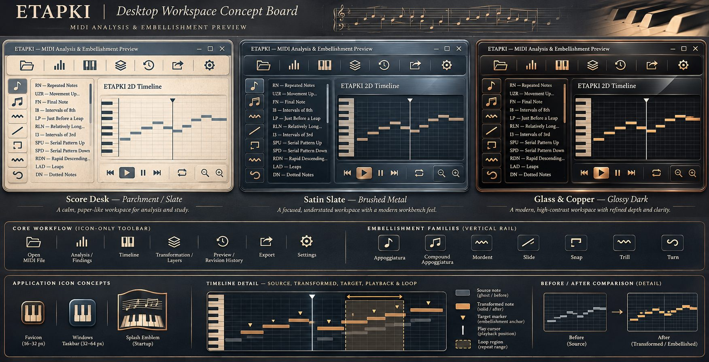
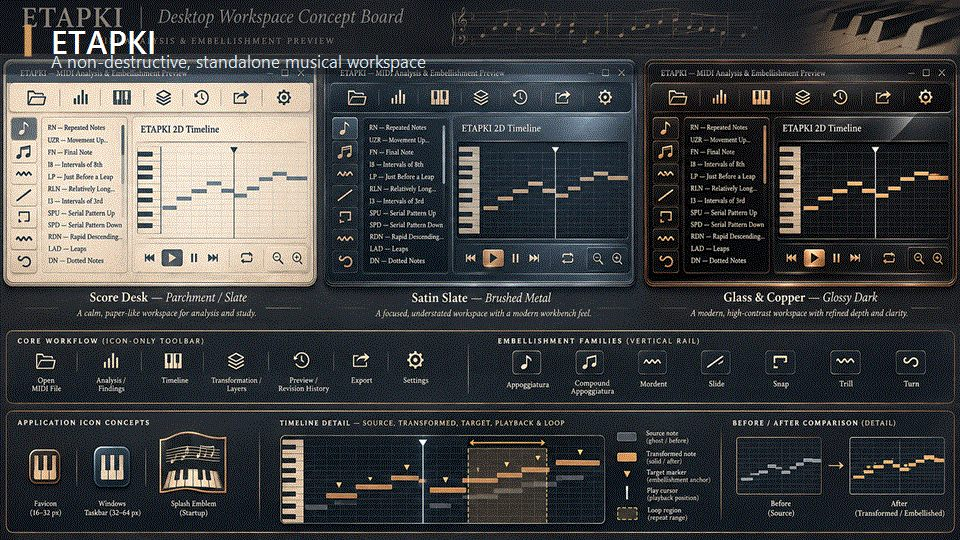
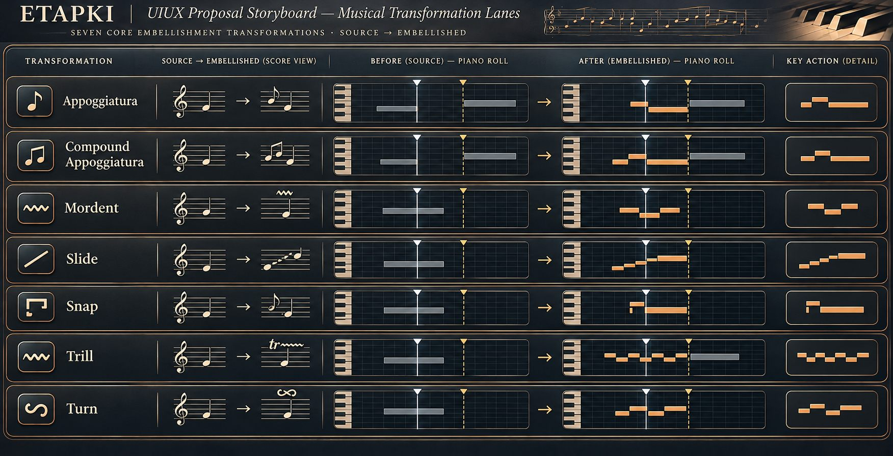

Traceable analysis
Choose labels, inspect evidence, and jump from a finding to its exact timeline location.
ETAPKI analyzes a MIDI source, identifies meaningful locations, and lets you audition traceable embellishment revisions without touching the original file.
A presentation site for the ETAPKI C++ application. No account, advertising, subscription, or cloud upload is required.

The website reflects the current application's verified direction without presenting backend implementation details as user-facing features.
Choose labels, inspect evidence, and jump from a finding to its exact timeline location.
Appoggiatura, compound appoggiatura, mordent, slide, snap, trill, and turn remain individually identifiable.
Preview, reject, reselect, compare, and export a new validated MIDI file while the source remains intact.
The interface uses material, spacing, and evidence to establish hierarchy — not ads, conversion funnels, or SaaS language.
The visual concept clip shows the intended progression from application identity through icon-first workflow and seven transformation lanes.

